DIP-Python tutorials for image processing and machine learning(70-71)-Deep Learning
学习自 Youtube 博主 DigitalSreeni。
文字数：---
正文
70 - An overview of deep learning and neural networks
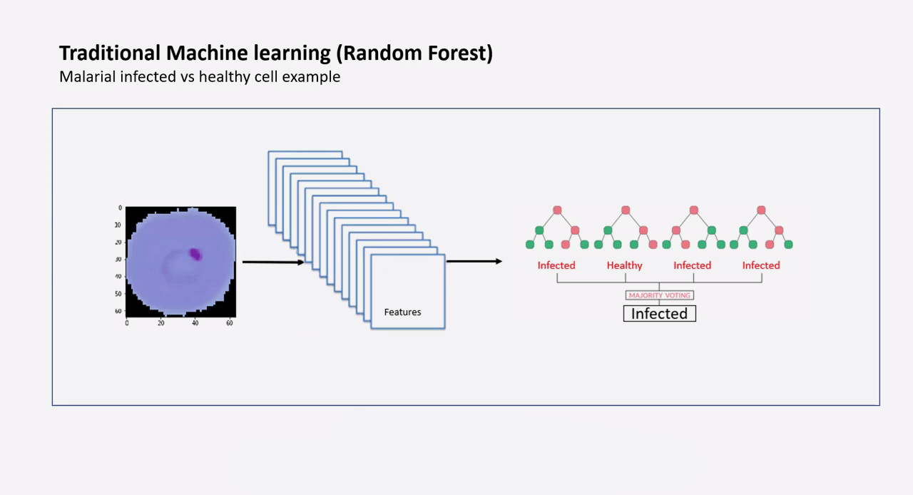
传统的机器学习：提取特征然后生成模型
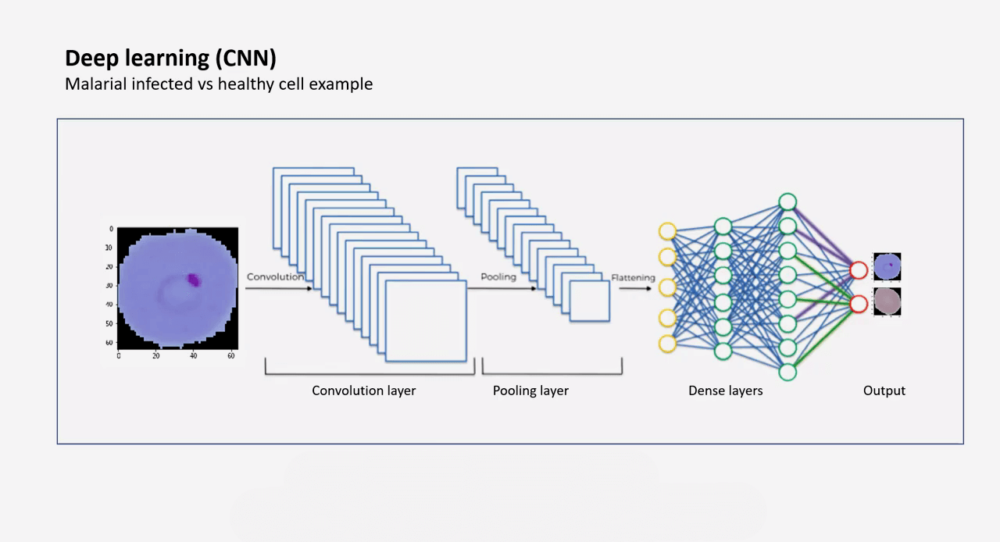
CNN 深度卷积网络：输入-卷积层-池化层-全连接层
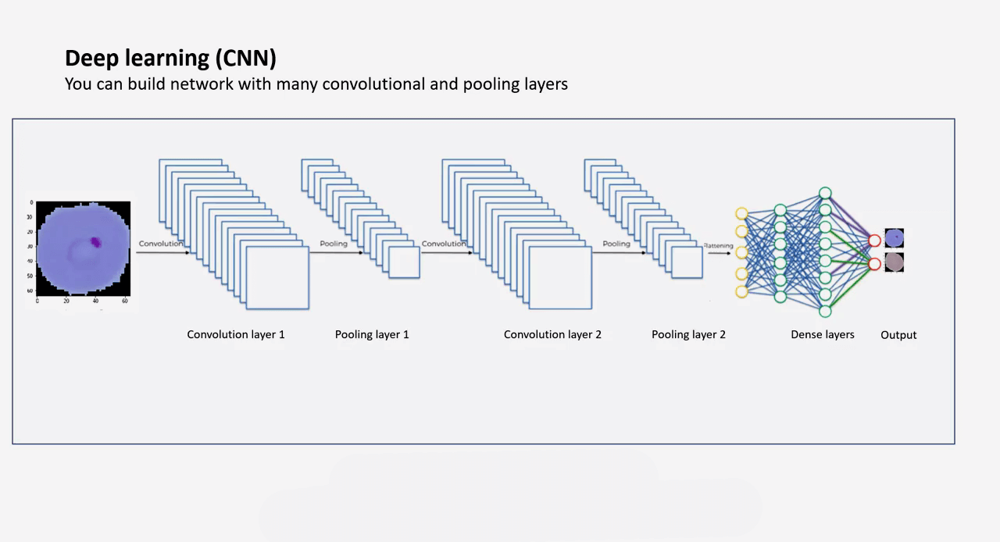
卷积层和池化层可以有很多层。
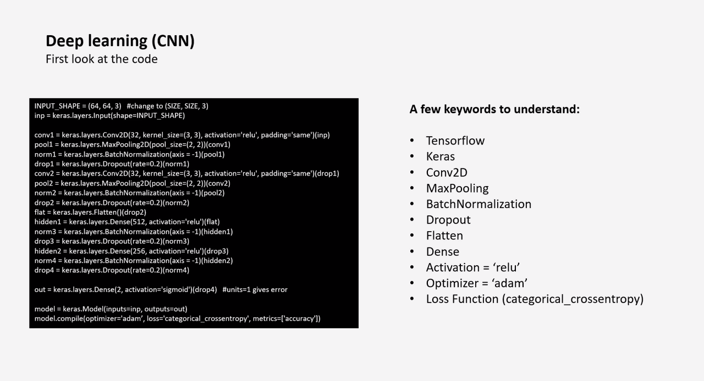
1 | |
A few keywords to understand:
- Tensorflow
- Keras
- Conv2D
- MaxPooling
- BatchNormalization
- Dropout
- Flatten
- Flatten 层用来将输入“压平”，即把多维的输入一维化，常用在从卷积层到全连接层的过渡。Flatten 不影响 batch 的大小。
- 深度学习中 Flatten 层的作用_Microstrong0305 的博客-CSDN 博客_flatten 层
- Dense
- 全连接层
- Activation =‘relu’
- 激活函数：relu
- Optimizer =‘adam’
- Loss Function (categorical_crossentropy)
- 损失函数
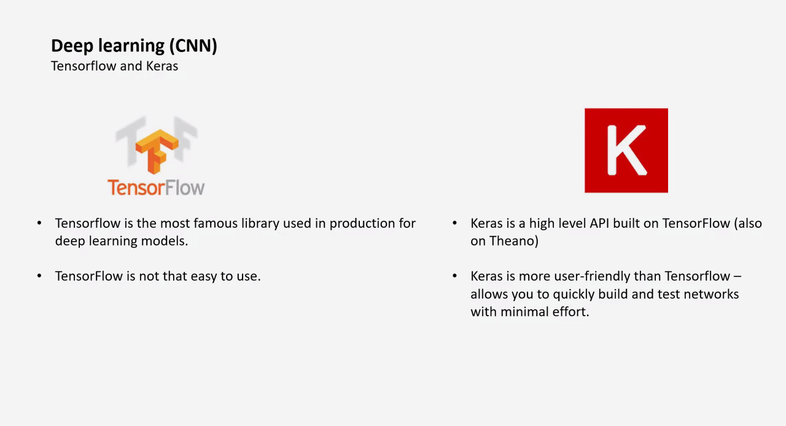
TensorFlow and Keras
- TensorFlow
- TensorFlow is the most famous library used in production for deep learning models.
- TensorFlow is not that easy to use.
- Keras
- Keras is a high level API built on TensorFlow (also on Theano)
- Keras is more user-friendly than TensorFlow -allows you to quickly build and test networks with minimal effort.
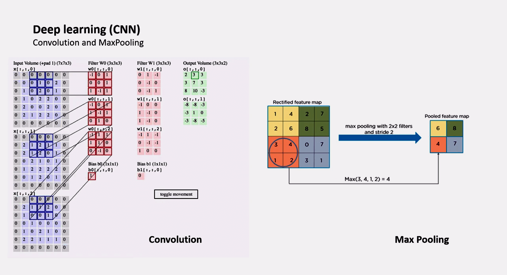
- 卷积和池化
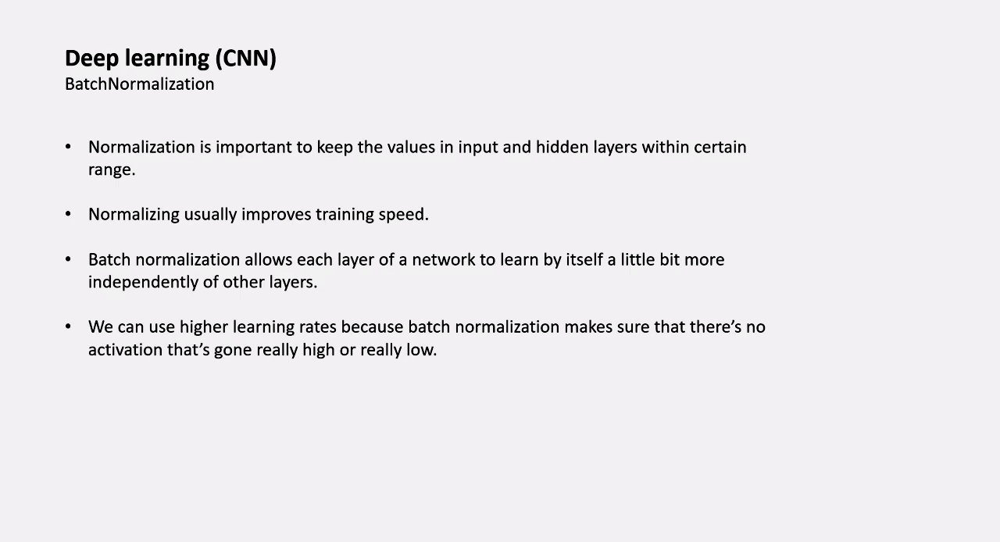
BatchNormalization
- Normalization is important to keep the values in input and hidden layers within certain range.
- Normalizing usually improves training speed.
- Batch normalization allows each layer of a network to learn by itself a little bit more independently of other layers.
- We can use higher learning rates because batch normalization makes sure that there’s noactivation that’s gone really high or really low.
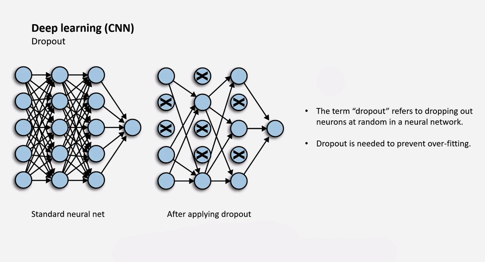
Dropout（通常是将权重设为 0）
- The term “dropout” refers to dropping out neurons at random in a neural network.
- Dropout is needed to prevent over-fitting.
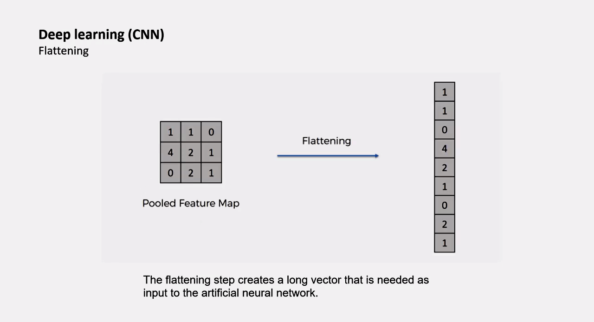
Flattening
- The flattening step creates a long vector that is needed as input to the artificial neural network.
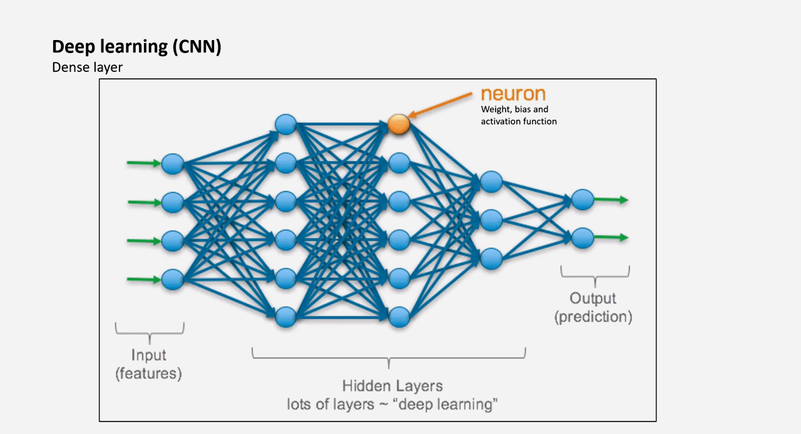
Dense layer
- Input (features)
- Hidden Layers (lots of layers ~ “deep learning”)
- neuron (Weight, bias and activation function)
- Output (prediction)
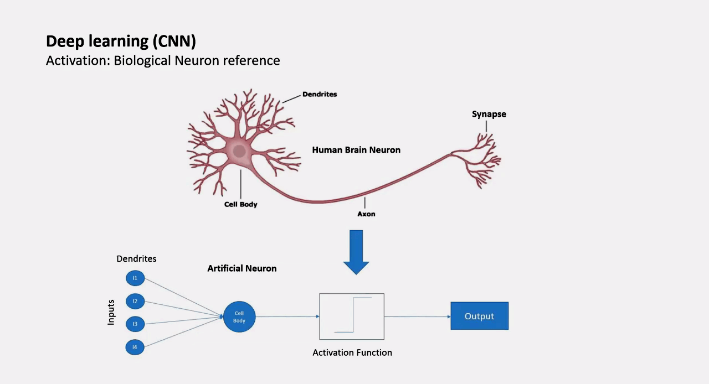
Activation: Biological Neuron reference 参考生物的神经元
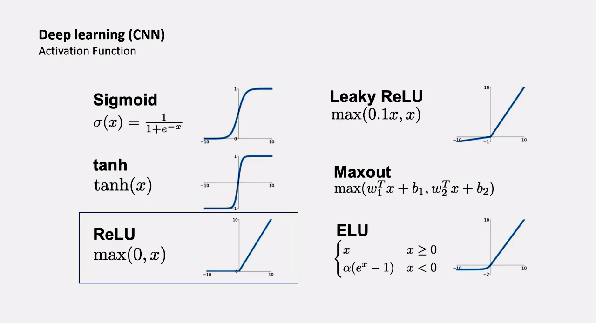
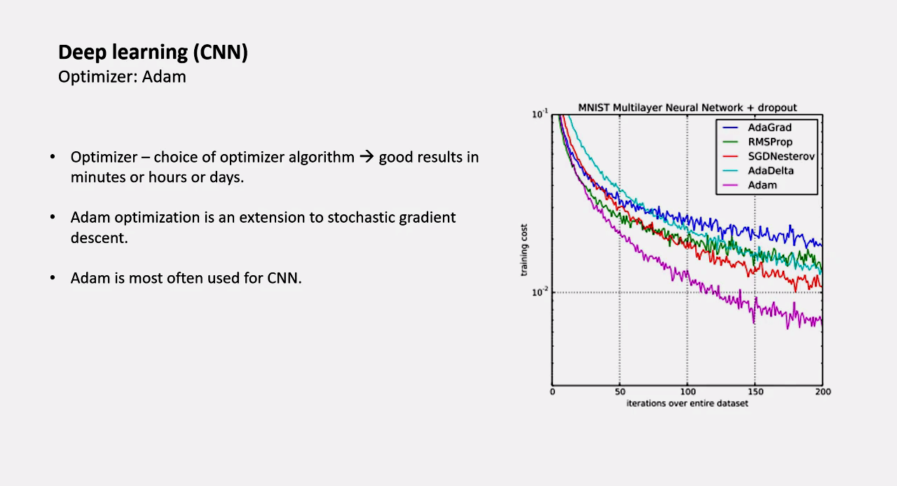
Optimizer:Adam
-
Optimizer → choice of optimizer algorithm → good results in minutes or hours or days.
- 优化器 → 优化器算法的选择 → 在几分钟或几小时或几天内取得好的结果。
-
Adam optimization is an extension to stochastic gradient descent.
- Adam 优化是对随机梯度下降的延伸。
-
Adam is most often used for CNN.
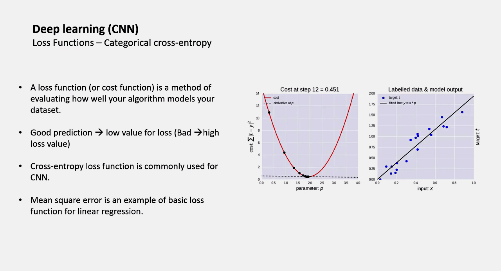
Loss Functions - Categorical cross-entropy 交叉熵损失函数
- A loss function (or cost function) is a method of evaluating how well your algorithm models your dataset.
- Good prediction → low value for loss (Bad → high loss value)
- Cross-entropy loss function is commonly used for CNN.
- Mean square error is an example of basic loss function for linear regression.
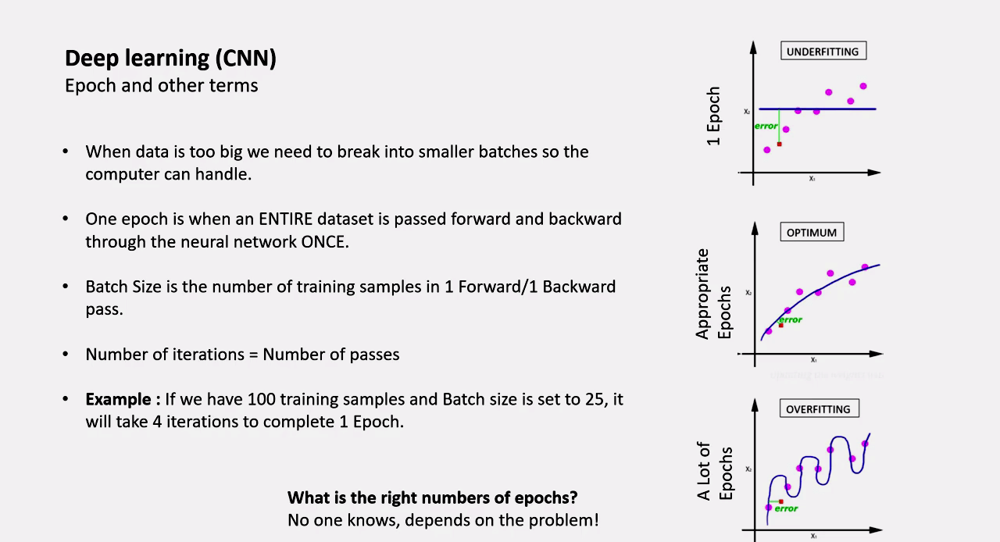
Epoch and other terms
-
When data is too big we need to break into smaller batches so the computer can handle.
-
One epoch is when an ENTIRE dataset is passed forward and backward through the neural network ONCE.
- 一个 epoch 是指一个完整的数据集通过神经网络向前和向后传递一次。
-
Batch Size is the number of training samples in 1 Forward/1 Backward pass.
- Batch Size 是指 1 个前向 / 1 个后向通道中的训练样本数。
-
Number of iterations = Number of passes
- 迭代次数 = 通过次数
-
Example : lf we have 100 training samples and Batch size is set to 25, it will take 4 iterations to complete 1 Epoch.
- 例子：如果我们有 100 个训练样本，批量大小设置为 25，则需要 4 次迭代来完成一个周期。
What is the right numbers of epochs?
No one knows, depends on the problem!
71 - Malarial cell classification using CNN
1 | |
- 尝试导入输入(500 个未收感染的细胞，500 个被感染的细胞)
1 | |
- 导入被感染的细胞，设为标签
0
1 | |
- 导入未被感染的细胞，设为标签
1
1 | |
-
设置 CNN
- 2 conv and pool layers. with some normalization and drops in between.
-
输入层
1 | |
- 卷积层 1 Conv2D layer
1 | |
- 池化层 1 MaxPooling2D layer
1 | |
1 | |
- Dropout 1 Dropout layer
1 | |
- 卷积层 2
1 | |
- 池化层 2
1 | |
- Normalization 2
1 | |
- Dropout 2
1 | |
- Flatten 层 Flatten layer
- Flatten the matrix to get it ready for dense.
1 | |
- 隐藏层 1 Dense layer
1 | |
- Normalization 3
1 | |
- Dropout 3
1 | |
- 隐藏层 2
1 | |
- Normalization 4
1 | |
- Drop 4
1 | |
- 输出层
1 | |
- 生成模型 The Model class
1 | |
1 | |
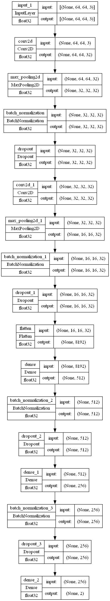
1 | |
Model: "model"
_________________________________________________________________
Layer (type) Output Shape Param #
=================================================================
input_1 (InputLayer) [(None, 64, 64, 3)] 0
conv2d (Conv2D) (None, 64, 64, 32) 896
max_pooling2d (MaxPooling2D (None, 32, 32, 32) 0
)
batch_normalization (BatchN (None, 32, 32, 32) 128
ormalization)
dropout (Dropout) (None, 32, 32, 32) 0
conv2d_1 (Conv2D) (None, 32, 32, 32) 9248
max_pooling2d_1 (MaxPooling (None, 16, 16, 32) 0
2D)
batch_normalization_1 (Batc (None, 16, 16, 32) 128
hNormalization)
dropout_1 (Dropout) (None, 16, 16, 32) 0
flatten (Flatten) (None, 8192) 0
dense (Dense) (None, 512) 4194816
batch_normalization_2 (Batc (None, 512) 2048
hNormalization)
dropout_2 (Dropout) (None, 512) 0
dense_1 (Dense) (None, 256) 131328
batch_normalization_3 (Batc (None, 256) 1024
hNormalization)
dropout_3 (Dropout) (None, 256) 0
dense_2 (Dense) (None, 2) 514
=================================================================
Total params: 4,340,130
Trainable params: 4,338,466
Non-trainable params: 1,664
_________________________________________________________________
卷积神经网络的参数计算_qian99的博客-CSDN博客_卷积神经网络参数
| 网络层(输入) | 输入 | 神经元个数 | size | stride | 输出 | 参数量 |
|---|---|---|---|---|---|---|
| input | 64x64x3（长 x 宽 x 通道数） | 64x64x3 | 0 | |||
| conv2d | 64x64x3 | 32 | 3x3 | 1 | 64x64x32 | 32x3x3x3+32=896 |
| max_pooling2d | 64x64x32 | 2x2 | None | (64/2)x(64/2)x32 | 0 | |
| batch_normalization | 32x32x32 | 32x32x32 | 128 | |||
| dropout | 32x32x32 | 32x32x32 | 0 | |||
| conv2d_1 | 32x32x32 | 32 | 3x3 | 1 | 32x32x32 | 32x3x3x32+32=9248 |
| max_pooling2d_1 | 32x32x32 | 2x2 | 1 | (32/2)x(32/2)x32 | 0 | |
| batch_normalization_1 | 16x16x32 | 16x16x32 | 128 | |||
| dropout_1 | 16x16x32 | 16x16x32 | 0 | |||
| flatten | 16x16x32 | 16x16x32=8192 | 0 | |||
| dense | 8192 | 512 | 512 | 8192x512+512=4194816 | ||
| batch_normalization_2 | 512 | 512 | 2048 | |||
| dropout_2 | 512 | 512 | 0 | |||
| dense_1 | 512 | 256 | 256 | 512x256+256=131328 | ||
| batch_normalization_3 | 256 | 256 | 1024 | |||
| dropout_3 | 256 | 256 | 0 | |||
| dense_2 | 256 | 2 | 2 | 256x2+2=514 |
- 设置测试集和训练集，开始训练
1 | |
1 | |
Epoch 1/25
12/12 [==============================] - 9s 99ms/step - loss: 0.9405 - accuracy: 0.6444 - val_loss: 31.2568 - val_accuracy: 0.5625
Epoch 2/25
12/12 [==============================] - 0s 37ms/step - loss: 0.5048 - accuracy: 0.7472 - val_loss: 23.6857 - val_accuracy: 0.5625
Epoch 3/25
12/12 [==============================] - 0s 37ms/step - loss: 0.3281 - accuracy: 0.8417 - val_loss: 17.8224 - val_accuracy: 0.5625
Epoch 4/25
12/12 [==============================] - 0s 37ms/step - loss: 0.2036 - accuracy: 0.9250 - val_loss: 14.3039 - val_accuracy: 0.5625
Epoch 5/25
12/12 [==============================] - 0s 37ms/step - loss: 0.1568 - accuracy: 0.9431 - val_loss: 13.0039 - val_accuracy: 0.5625
Epoch 6/25
12/12 [==============================] - 0s 37ms/step - loss: 0.1074 - accuracy: 0.9694 - val_loss: 7.4553 - val_accuracy: 0.5625
Epoch 7/25
12/12 [==============================] - 0s 37ms/step - loss: 0.0858 - accuracy: 0.9778 - val_loss: 3.5444 - val_accuracy: 0.5500
Epoch 8/25
12/12 [==============================] - 0s 37ms/step - loss: 0.0608 - accuracy: 0.9819 - val_loss: 4.7493 - val_accuracy: 0.5500
Epoch 9/25
12/12 [==============================] - 0s 37ms/step - loss: 0.0632 - accuracy: 0.9764 - val_loss: 4.7916 - val_accuracy: 0.5625
Epoch 10/25
12/12 [==============================] - 0s 36ms/step - loss: 0.0432 - accuracy: 0.9889 - val_loss: 1.9020 - val_accuracy: 0.5875
Epoch 11/25
12/12 [==============================] - 0s 36ms/step - loss: 0.0489 - accuracy: 0.9847 - val_loss: 2.2950 - val_accuracy: 0.5750
Epoch 12/25
12/12 [==============================] - 0s 37ms/step - loss: 0.0458 - accuracy: 0.9861 - val_loss: 0.8035 - val_accuracy: 0.7625
Epoch 13/25
12/12 [==============================] - 0s 38ms/step - loss: 0.0264 - accuracy: 0.9958 - val_loss: 1.4798 - val_accuracy: 0.6500
Epoch 14/25
12/12 [==============================] - 0s 38ms/step - loss: 0.0244 - accuracy: 0.9931 - val_loss: 1.6248 - val_accuracy: 0.6625
Epoch 15/25
12/12 [==============================] - 0s 38ms/step - loss: 0.0160 - accuracy: 0.9958 - val_loss: 1.2913 - val_accuracy: 0.7125
Epoch 16/25
12/12 [==============================] - 0s 39ms/step - loss: 0.0169 - accuracy: 0.9958 - val_loss: 1.4256 - val_accuracy: 0.6875
Epoch 17/25
12/12 [==============================] - 0s 40ms/step - loss: 0.0114 - accuracy: 0.9986 - val_loss: 1.2699 - val_accuracy: 0.7000
Epoch 18/25
12/12 [==============================] - 0s 39ms/step - loss: 0.0158 - accuracy: 0.9972 - val_loss: 0.7563 - val_accuracy: 0.7875
Epoch 19/25
12/12 [==============================] - 0s 39ms/step - loss: 0.0133 - accuracy: 0.9972 - val_loss: 0.6219 - val_accuracy: 0.8500
Epoch 20/25
12/12 [==============================] - 0s 38ms/step - loss: 0.0194 - accuracy: 0.9958 - val_loss: 0.7935 - val_accuracy: 0.8500
Epoch 21/25
12/12 [==============================] - 0s 38ms/step - loss: 0.0174 - accuracy: 0.9972 - val_loss: 2.8081 - val_accuracy: 0.5625
Epoch 22/25
12/12 [==============================] - 0s 38ms/step - loss: 0.0188 - accuracy: 0.9931 - val_loss: 0.6510 - val_accuracy: 0.8000
Epoch 23/25
12/12 [==============================] - 0s 38ms/step - loss: 0.0340 - accuracy: 0.9903 - val_loss: 1.6654 - val_accuracy: 0.6250
Epoch 24/25
12/12 [==============================] - 0s 38ms/step - loss: 0.0248 - accuracy: 0.9931 - val_loss: 0.8992 - val_accuracy: 0.7625
Epoch 25/25
12/12 [==============================] - 0s 38ms/step - loss: 0.0201 - accuracy: 0.9917 - val_loss: 2.0561 - val_accuracy: 0.7250
- 查看结果
1 | |
7/7 [==============================] - 0s 17ms/step - loss: 1.7793 - accuracy: 0.6950
Test_Accuracy: 69.50%
1 | |
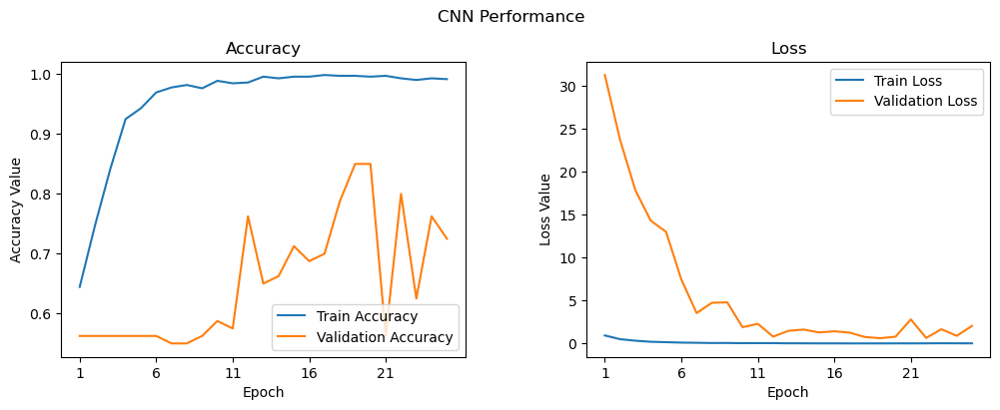
可以推断出 epoch 次数过多，出现了过拟合现象。
- 保存模型
1 | |
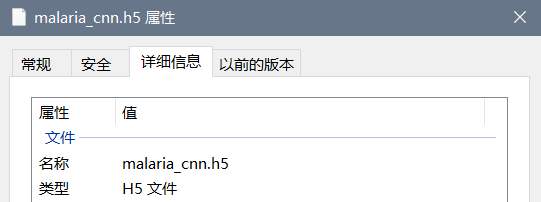